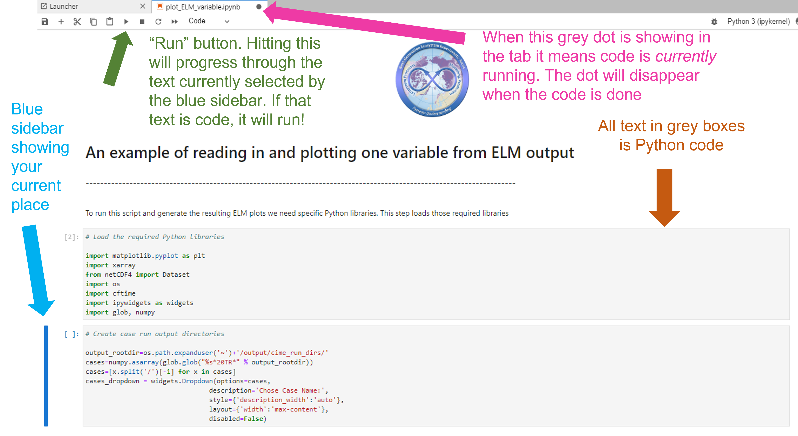

6.5.1. Analyzing ELM Output in Jupyter Lab¶
Running Jupyter-Lab and Analyzing ELM Output¶
Step 0. Download the visualization Docker image
To download the Jupyter SciPy Notebook image, run the following command:
#docker pull jupyter/scipy-notebook
docker pull yuanfornl/ngee-arctic-modex25:vis-main-latest
This command will download a pre-built programming environment to your computer. This environment is packaged using Docker, which allows software to run the same way on different machines without needing to install everything manually.
In this case, Docker retrieves an image called yuanfornl/ngee-arctic-modex25:vis-main-latest from an online repository. This image already contains Python, Jupyter Lab, and commonly used scientific and mathematical libraries such as NumPy, SciPy, and pandas. These tools are often used for data analysis, math, and science projects.
Running this command only downloads the environment; it does not start it. After the image is pulled, you must run it using a separate command to start Jupyter and open it in a web browser.
Step 1. Start communicating with the Jupyter-Lab environment
Next, run the image to start Jupyter and make it accessible from your local computer.
docker run --rm -it \
-p 8888:8888 \
-v "$PWD":/home/jovyan/work \
-v output:/mnt/output \
yuanfornl/ngee-arctic-modex25:vis-main-latest jupyter lab
Note
TODO
Not sure if this is exactly what we want for volume mounts here…
do we want the current working directory to be mounted inside the container?
If not, we may want to specify a different path instead of $PWD.
When this command runs, Docker starts the container and launches Jupyter. In the terminal output, Docker will display a URL containing a security token.
More info about the docker run parameters.
The docker run command looks overwhelming, but it is just specifying a few options
--rm: This option tells Docker to automatically remove the container when it stops. This helps keep your system clean by not leaving behind unused containers.
-it: This option allows you to interact with the container via the terminal.
-p 8888:8888: This option maps port 8888 inside the container to port 8888 on your local machine, allowing you to access Jupyter Lab through your web browser.
-v "$PWD":/home/jovyan/work: This option mounts the current directory on your local machine to the/home/jovyan/workdirectory inside the container, enabling you to access your files from within Jupyter Lab.
Jupyter Code Breakdown¶
Running this command will start a JupyterLab Docker environment and the terminal window will look like this:

To access the JupyterLab environment, just copy and paste the URL that starts with http://127.0.0.1:8888/?token=... from the terminal window into your browser and hit enter. Note that each time you start a JupyterLab environment, a unique URL will be generated.

You should then see a Jupyter-Lab environment in your browser:

Step 2. Run Jupyter Notebook scripts to look at ELM output
After your notebook environment starts in your browser, you can open and run different notebook scripts. You can find example scripts on the “scripts” folder on the left of the screen, e.g.

In the script folder, find the built-in notebook “plot_ELM_variable.ipynb”. You may need to expand the sidebar menu using your cursor so that you can read the full names of the notebooks listed. You can double-click on the notebook script to open it in the viewer on the right. You will see a document open in the workspace that says “An example of reading in and plotting one variable from ELM output” and features the NGEE Arctic logo.
At this screen shown below there are a few details worth pointing out a few details to help you navigate this tool. These are highlighted using colored arrows in the screenshot below.
Run Button (green arrow): Hitting this run button will activate the portion of the document currently selected by the blue sidebar. If the portion of the document is a code box, the code will be run.
Blue sidebar (blue arrow): This sidebar shows your current place in the document and it will move down each time you hit “run”.
Running code dot (pink arrow): this dot shows up when the code is currently being run. If you hit the run button and it seems like nothing happened, check to see if this dot is still present. If so, give your computer a minute to think. The dot disappears when it is done.
Code box (orange arrow): The text in this box is Python code. Anything with “#” is commented out, ie that text does not “do” anything but provides notes and context for organizing the code. In the active code portions of the text, different text colors are used to differentiate different parts of the code (function types, different kinds of input, etc).
{kind=link}
From here, you can follow the tutorial in the Python lab notebook as it takes you through finding model output, choosing a variable from the list of all available, and graphing the model output from the transient period
Have fun exploring these graphs and don’t forget to ask any questions you make have on the Slack Channel!
You can save a csv file of a particular variable by using the to_dataframe.to_csv() method in python - assuming your variable is contained in an array called vardata, you can use vardata.to_dataframe().to_csv(“output_filename.csv”)
Step 3. Shutting down Jupyter-Lab and freeing up your terminal
When you are finished, click on the File menu in the Jupyter-Lab environment and choose “Shut down.” This will stop the web-based environment and free up the terminal window where you started it in Step 1.